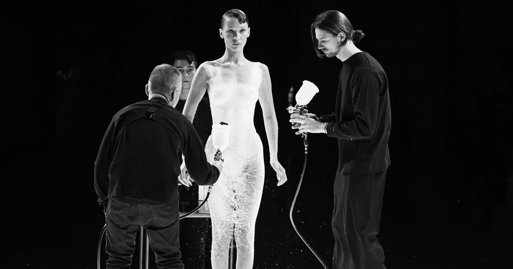

Looks Iconiques
Robe Coperni portée par Bella Hadid (2022)

Une robe créée en direct sur le corps de Bella Hadid lors du défilé Coperni. Un moment historique mêlant technologie et couture, devenu instantanément viral.
Michael Jackson-La Veste Rouge "Thriller" (1983)


Une veste rouge à détails noirs devenue un symbole mondial. Ce look audacieux a marqué la pop culture et reste l’un des outfits masculins les plus reconnaissables de l’histoire.
La petite robe noire – Audrey Hepburn (Givenchy, 1961)


Créée pour Breakfast at Tiffany’s, cette robe signée Givenchy est devenue le symbole absolu de l’élégance. Simple, raffinée et intemporelle, elle a révolutionné la mode féminine.
Robe “Happy Birthday Mr. President” – Marilyn Monroe (1962)


Une robe couleur peau incrustée de milliers de cristaux, créée par Jean Louis. Portée pour chanter “Happy Birthday” au président Kennedy, elle est devenue l’un des looks les plus iconiques de l’histoire de la mode.
Jackie Kennedy – Ensemble rose Chanel (1963)

Un tailleur rose emblématique porté par Jackie Kennedy. Symbole d’élégance et de modernité, il reste l’un des ensembles les plus iconiques de l’histoire de la mode.
Ces tenues ont été choisies car elles ont
marqué la mode par leur style unique et leur
impact culturel.
Elles représentent l’innovation, l’élégance ou
l’audace, de Coperni à Chanel en passant par
Marilyn Monroe et Michael Jackson.
Chacune est devenue iconique et continue
d’inspirer la mode encore aujourd’hui.